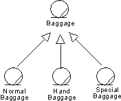

| Рекомендация: Generalization in the Business Analysis Model |
 |
|
| Связанные элементы |
|---|
ExplanationMany things in real life have common properties. For example, both dogs and cats are animals. Classes can have common properties as well. Relationships of this type between classes can be clarified by means of a generalization. By extracting common properties into classes of their own, the business model will be easier to change in the future. A class that inherits general characteristics from another class is called a descendant. The class from which the descendant has inherited is called the ancestor. A generalization shows that one class inherits from another. This means that the definition of the ancestor, including any attributes or operations, is also valid for the descendant. The ancestor's relationships are also inherited. Generalization can take place in several stages, which makes it possible to model complex, multileveled inheritance hierarchies, although the number of levels should be restricted for easier understanding. General properties are placed in the upper part of the inheritance hierarchy, and special properties lower down in the hierarchy. In other words, the generalization-relationship can be used to model specializations of a more general concept. Example:Passengers arriving at the airport check-in bring different kinds of baggage, Normal Baggage, Hand Baggage and Special Baggage. From the airline's viewpoint, they have a few common properties, besides being baggage-each bag has an owner and a weight, for example. These common properties can be modeled by attributes and operations in a separate class called Baggage. Normal Baggage, Hand Baggage and Special Baggage will inherit from this class.  Normal Baggage, Hand Baggage, and Special Baggage classes have common properties. They are all specializations of the general concept Baggage. A class can inherit several other classes-this is called "multiple inheritance"-although normally it will inherit only one. If the class inherits several classes, it is important to check how the associations, the attributes, and the operations are named in the ancestors. If the same name appears in several ancestors, you must describe what this means to the specific inheriting class. Concrete and Abstract ClassesA class that exists only so that other classes can inherit it is an abstract class. An abstract class is never instantiated. However, an object of a class that inherits an abstract class conforms to its own description and the description of the inherited class. Classes that are instantiated in the business are concrete classes. In this context, "abstract" means something completely different to what it means in ordinary speech. Something may very well be abstract in the ordinary sense of the word without being represented by an abstract class. Lessons in school are abstract phenomena, or concepts' because they cannot be touched. However, if you model school tasks, a lesson would most likely resemble a concrete class-one that is instantiated. Similarly, concrete phenomena, such as products and persons, can be said to produce abstract classes if they have properties in common with other classes. UseThe main purpose of using inheritance is to achieve an object model that accommodates change. However, inheritance should be used carefully:
|
© Copyright IBM Corp. 1987, 2006. Все права защищены.. |